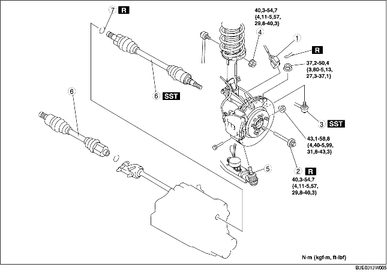

1. Vidanger l'huile de boîte-pont. (voir la section REMPLACEMENT D'HUILE DE BOITE-PONT [F35M-R].) (voir la section REMPLACEMENT DE LIQUIDE DE BOITE-PONT AUTOMATIQUE (ATF).)
2. Déposer les différents éléments selon l'ordre indiqué dans le tableau.
3. Pour la repose, suivre l'ordre inverse de la dépose.

.
|
1
|
Connecteur de capteur ABS de vitesse de roue
|
|
2
|
Ergot d'arrêt
|
|
3
|
Joint à rotule d'embout de biellette de direction
(voir la section DEPOSE/REPOSE DE BARRE TRANSVERSALE AVANT.)
|
|
4
|
Écrou supérieur de fourchette de stabilisateur
|
|
5
|
Joint à rotule de bras inférieur avant
|
|
6
|
Arbre de transmission
(voir la section Note sur la dépose d'arbre de transmission.)
(voir la section Note sur la repose d'arbre de transmission.)
|
|
7
|
Attache
(voir la section Note sur la repose d'attache.)
|
1. Reposer un boulon de rechange sur l'arbre de transmission.
2. Frapper légèrement sur le boulon à l'aide d'un marteau de cuivre, et séparer l'arbre de transmission de l'axe.
3. Séparer l'arbre de transmission du moyeu de roue.
4. Séparer l'arbre de transmission (gauche) de l'axe en faisant levier à l'aide d'une barre insérée entre l'anneau extérieur et la boîte-pont.
5. Débrancher l'arbre de transmission (droite) de l'arbre de raccordement en portant de légers coups sur l'anneau extérieur latéral de boîte-pont à l'aide d'une barre en laiton et d'un marteau.
6. Monter les outils SST sur la boîte-pont après la dépose de l'arbre de raccordement.
1. Reposer une nouvelle attache d'arbre de transmission sur la rainure d'attache située à l'extrémité de l'arbre de transmission, en orientant l'ouverture de l'attache vers le haut et en veillant à ce que la largeur de l'attache soit conforme aux spécifications.
2. Après la repose, mesurer le diamètre extérieur.
1. Insérer l'arbre de transmission dans le moyeu de roue.
2. Appliquer de l'huile pour boîte-pont sur la lèvre du joint d'huile.
3. Reposer l'arbre de transmission sur la boîte-pont.
4. Après la repose, tirer vers l'avant la bague extérieure côté boîte-pont pour vérifier que l'arbre de transmission est bien retenu par l'attache.
1. Reposer une attache neuve sur l'arbre de raccordement. (voir la section DEPOSE/REPOSE D'ARBRE DE RACCORDEMENT.)
2. Insérer l'arbre de transmission dans le moyeu de roue.
3. Insérer l'arbre de transmission dans l'arbre de raccordement.
4. Après la repose, tirer vers l'avant la bague extérieure côté boîte-pont pour vérifier que l'arbre de transmission est bien retenu par l'attache.